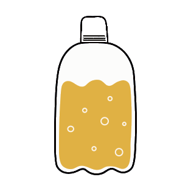
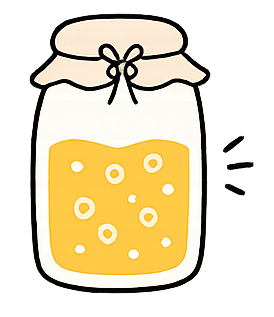
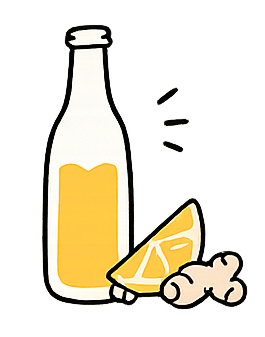
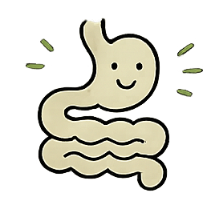
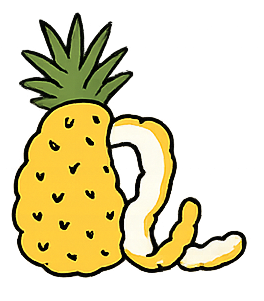
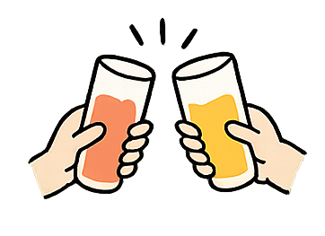

Supplied in reusable 4 litre plastic kegs so you control the serving size, not us. These are collected, washed and refilled reducing on-site waste and avoiding energy intensive can and bottle recycling. These bottles are also really strong which is important because our drinks are so active and really fizzy. They can survive transport in warm weather.
→

We ferment in the traditional way with real cultures over many days, just like people have been doing for hundreds and even thousands of years. No shortcuts, or modified cultures. just real organic ingredients.
→

Made from fresh, whole, organic ingredients, no powders, concentrates or juices. Any sugar is mostly fermented away, creating depth, natural bubbles and complex flavours and <0.2g/100ml of sugar.

Our drinks are never pasturised or filtered and contain good bacteria that your gut will thank you for. They also produce their own CO2 meaning we don't need to import it from the middle east.
→

Many of our drinks are made from peels that would otherwise go to waste. The fermented fresh ingredients, such as ginger and turmeric pulp are also perfect for using in stir fries and are resold.
→

For everyday moments, good conversations and people who care about what they drink.